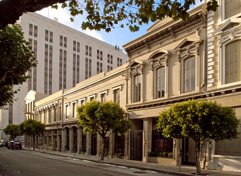
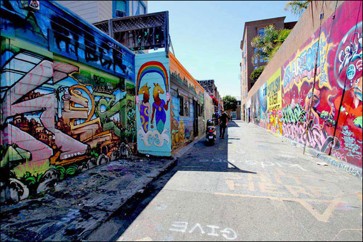

I'm originally from Los Angeles, I attended UC Santa Cruz, and I've been living in San Francisco since 2005. I love living in this city, and I'd like to share some of my favorite spots with you!
In my previous incarnation as a gallery manager for some amazing art and antiques dealers I spent most of my days around Jackson Square, one of the most historically fascinating parts of the city. It's located right at the base of the big pointy Trans America building.
The Mission is one of the most captivating neighborhoods in the city. It's both gritty and gentrified, a great place for to grab a tamale from a street vendor or drop your entire paycheck on fine dining. Economically and ethnically diverse, it's like a microcosm of San Francisco itself.
